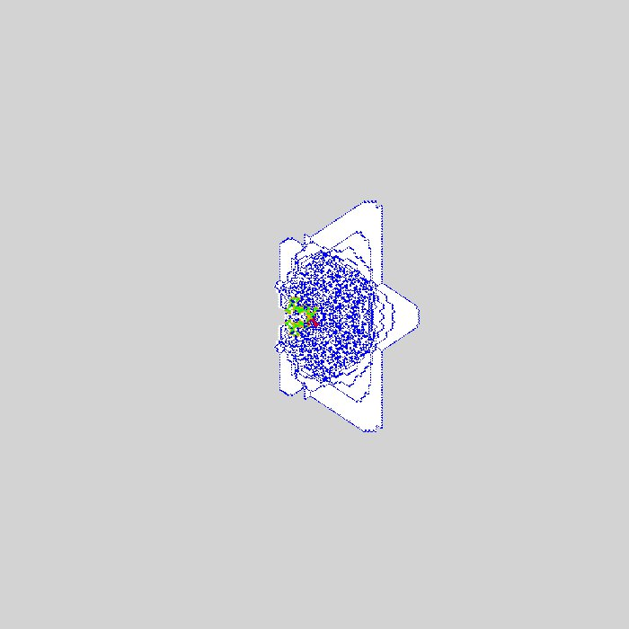
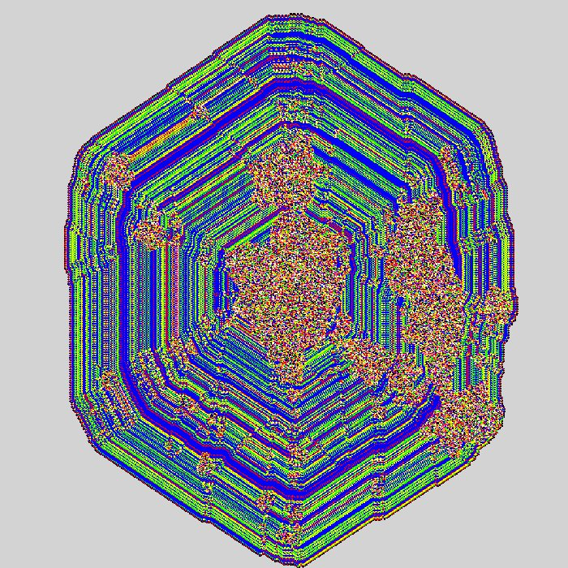
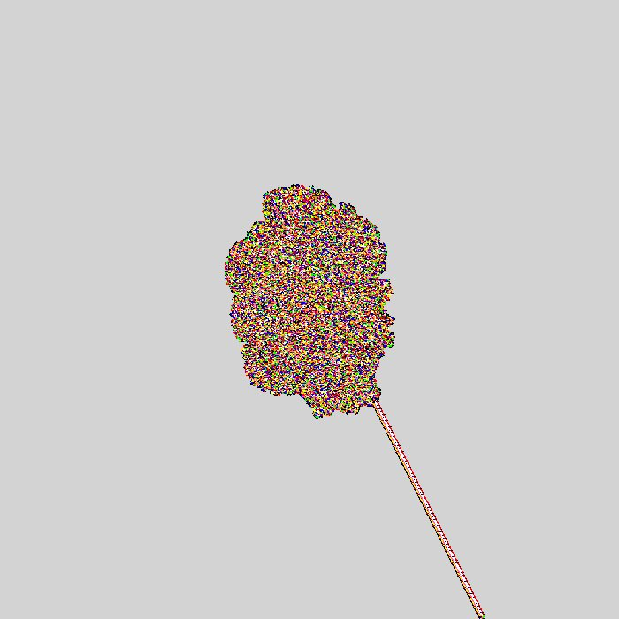
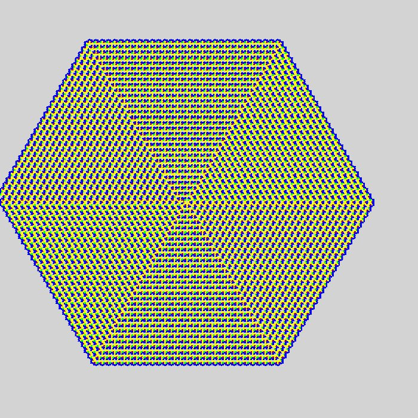
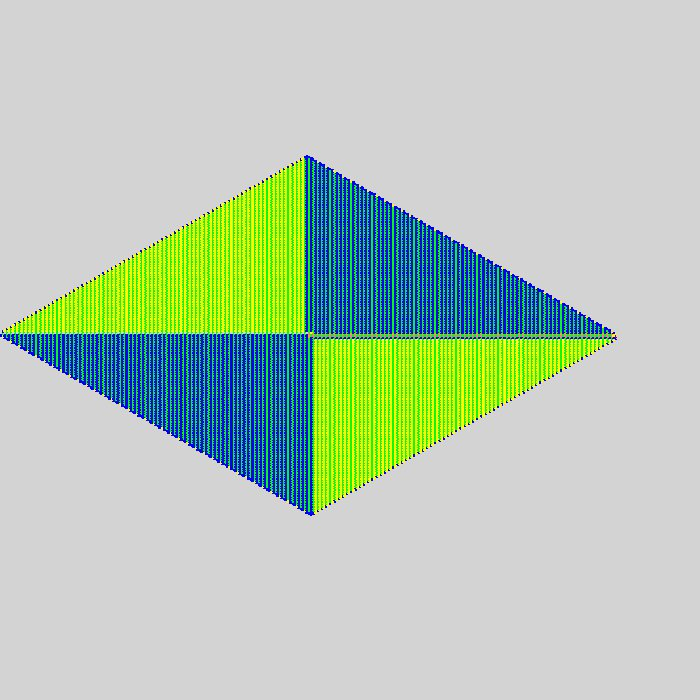
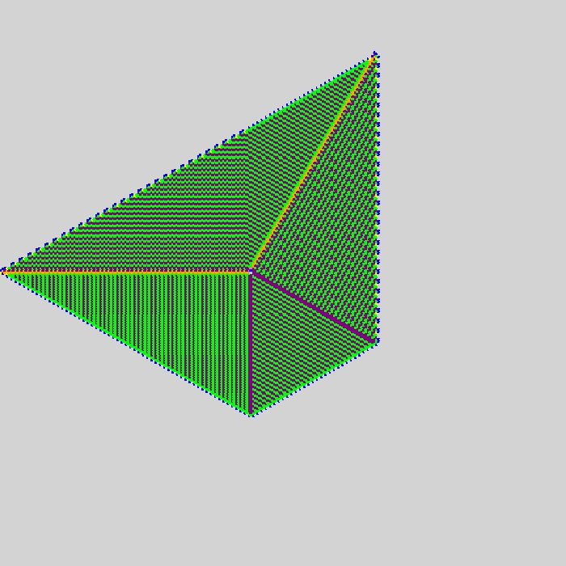
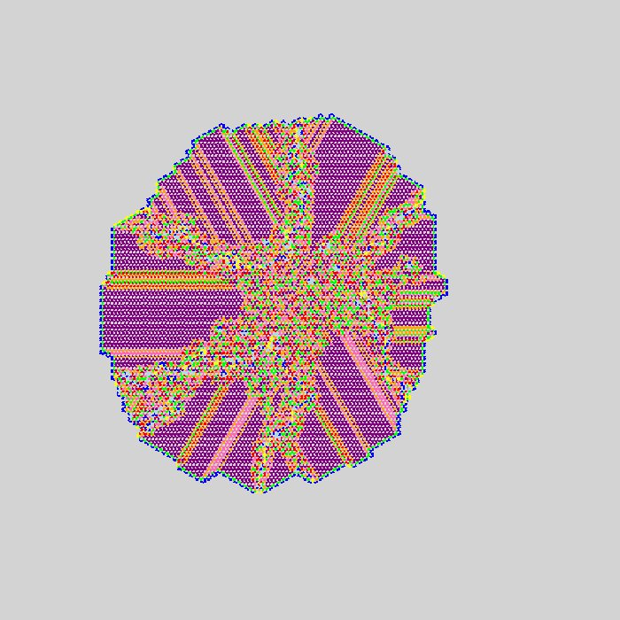
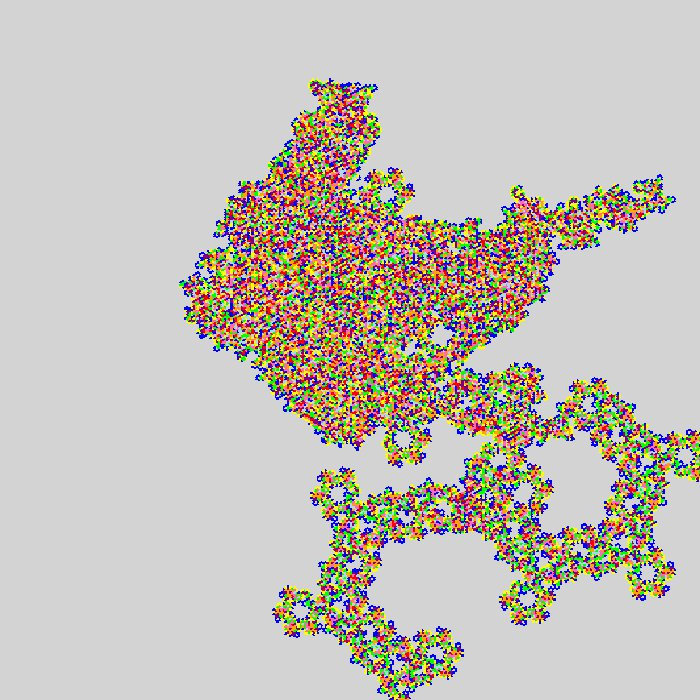
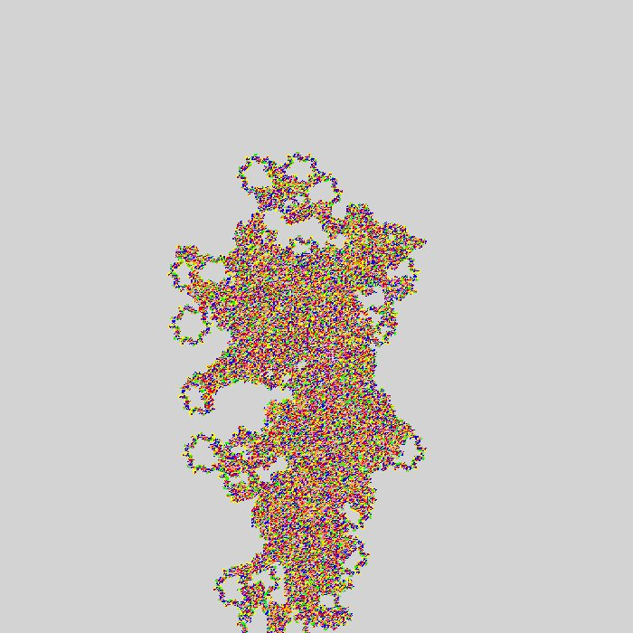

homepage
coding shit
I have always found cellular automata cool, from wolframs elementary ca to conways game of life.
here is a small exploration of langtons ant.
last updated: 22/11/25
Langton's Ant
The original Langtons ant is a simple 2d cellular automata where the grid can be colour 0 or 1 and the ant (the only active thing) follows these 2 rules:
if the current cell is 0, change it to 1, rotate (-)90 degrees left and move forward.
if the current cell is 1, change it to 0, rotate (+)90 degrees right and move forward.
This is the first 11,500 steps the ant will take. After 11,000ish it begins to forming a repeating pattern (or a highway) which will continue indefintely. I realise now i mixed my left and rights up so this is "upside down" :).
it is not hard to make variations to Langtons Ant by adding more options for cell values (more colours) and more rules.
on the left I have the rules: {0-->1,+90, 1-->3,+90, 2-->0,-90, 3-->2,-90} and on the right: {0-->3,+90, 1-->0,+90, 2-->1,-90, 3-->4,-90,4-->2,+90}.
these first few are made using matplotlib so the colours are harder to customise, so i will look to do the rest in pygame.
i have seen videos online where people have found awesome patterns just by modifying the number of colours and the rules. this video shows some awesome ones with 16 rules.
other modifications i have seen are multiple ants at once and a 3d version, which both make the system much more complicated.
Triangular Grid
i tried something i had not seen before and converted to grid made up of equilateral triangles. this was satisfying to code up.
to make it more clear i made the untouched grid cells grey, for the ant they are treated the same as white (state 0).
above are the standard 2-state ant on a triangular grid. the result was suprising, i was expecting a cycle to form like the square grid but after 100 million steps it still didnt happen.
moving on, now i am going to generalise my code by defining an ant by a sequence of L's and R's. so the original 2-state langton ant can be described as "RL". this make it easier to test many unique rules in a for loop.
this means if the ant is on a tile which is in state 0 (grey counts as state 0) it goes right and if it is in state 1 it goes left. or in programming terms: use the ith instruction of the rule string when the cell below is state i.
so for some string S of L's and R's, for any cell state i, the ant changes it the state (i+1)%N, where N is the length of the string S.
my goal is to try and find a highway on the triangular grid.
my approach was to iterate thru the binary numbers substituting 1 for R and 0 for L. then run an ant with that rule for 5 million steps. here are some results.



after running the first 1024 rules, i found a second highway at rule 928.
i think it is highly likely there are many more highways but they need more steps to appear.
unlike the square grid langtons ant which forms many unique and somewhat ordered patterns or highways, the triangular ant was much less interesting.
Hexagonal Grid
so i didnt stay away for long, i figured coding a hexagonal grid would be easy. I ran a bunch using just single turn left/right at each step. this produced identical results to triangular grid.
on reflection i think this is because the triangle grid contains both right side up and up side down triangles so the ants possible directions are 0, 60, 120, 180, 240, 300 degrees, same as a hexagon.
so i added in 2-right and 2-left indicated by 'r' and 'l' in the rules. but why stop there so i added in 'F' for forward and 'B' for backward too.
ofc this increased the number of possible rules exponentially, for a rule of length N, there are 6N possible rules.
so me being lazy, i generated random rules, and ran the code overnight. here are some i found that i thought were cool.






i am kinda satisfied with the results. if only i had a better way to search rules for interesting behaviour.
i dont think it would be too hard, some lyapunov exponent or something but i cbf rn. maybe if i complete my plans for a pentagonal grid ill do it.
Further Exploration - Pentagonal Grid
so obviously people have done langtons ant on all of the regular n-gon grids ive done here. can i do it for other shapes?
the tiling must have the following properties:
1. each edge of a tile must match to a single edge of another shape.
2. no two edges of a tile can match to the same tile.
these properties will ensure the ant always has a single path to take given a direction and that there are n-1 possible directions (excluding the way it entered the tile).
claim: this forces the tileset to be made of a single convex tile.
proof: exercise for reader.
this means only a pentagonal grid is possible, as no convex monotile solutions exist for n > 6.